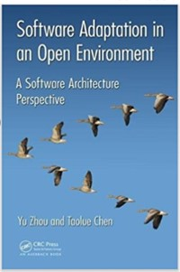
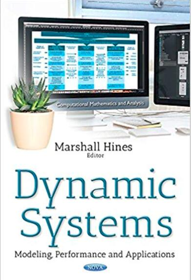

I am currently a full professor of software engineering in the College of Computer Science and Technology at Nanjing University of Aeronautics and Astronautics (NUAA). I received my PhD in computer science from Nanjing University in 2009 supervised by Professor Jian Lü. From 2006-2007, I worked as a research assistant with Professor Jiannong Cao in Department of Computing at Hongkong Polytechnic University. From 2007-2008, I was funded by a joint PhD education program from China Scholarship Council and studied at University of Zurich, supervised by Professor Harald Gall. Before joining NUAA in 2011, I conducted PostDoc research on software engineering at Politecnico di Milano, Italy, working with Professor Luciano Baresi. From 2015-2016, I visited SEAL lab at Univesity of Zurich, where I am also an adjunct researcher. I am currently a senior member of China Computer Federation (CCF), a member of Technical Committee on System Software of CCF, and a member of Technical Committee on Software Engineering of CCF. I have broad interests in software engineering with a focus on intelligent software engineering, big data and cloud computing, software evolution and reliability analysis, and co-authored more than 60 papers in these fields.
Advisor: Jian Lü
Advisor: Harald Gall
Advisor: Luciano Baresi
The general road map of my research interests spans the broad domain of software engineering. My recent research interests mainly include: artificial intelligence for software engineering, big data analysis, cloud computing, data mining, software evolution, and software reliability related analysis.
|
 |  |